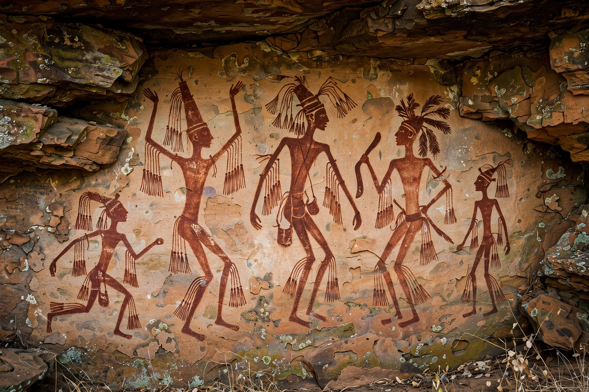

| Bradshaw rock paintings | |
|---|---|
 Gwion Gwion figures, Kimberley | |
| Location | Kimberley region, Western Australia |
| Material | Pigment on sandstone |
| Created | c. 12,000+ years ago (debated) |
| Discovered | 1891 by Joseph Bradshaw |
The Bradshaw rock paintings, known to Aboriginal people of the region as Gwion Gwion, are a distinctive style of rock art found in the Kimberley region of Western Australia. They depict elegant, elongated human figures adorned with headdresses, tassels, sashes and ornaments, painted mainly in a mulberry or reddish-brown pigment on rock shelter walls.
The paintings were first recorded by Europeans in 1891 by pastoralist Joseph Bradshaw, after whom they were named. Their age has been debated for decades: they are generally considered to be at least 12,000 years old, and dating of fossilised wasp nests over and under paintings suggests some figures may be around 17,000 years old or more, making them among the oldest figurative rock art traditions known.
The refinement of the figures once led some writers to speculate, without mainstream support, that they were painted by a mysterious non-Aboriginal race. Aboriginal custodians of the Ngarinyin, Worrorra and Wunambal peoples hold the Gwion as ancestral beings from the Dreaming, and contemporary scholarship recognises the art as part of the deep Aboriginal occupation of the Kimberley. Unlike later Wandjina art, the Gwion figures are rarely repainted, so many survive remarkably intact.
The Kimberley rock art region contains tens of thousands of sites. Threats include wildfire, tourism pressure and industrial development, and management increasingly involves Indigenous ranger groups and cultural-burning practices such as fire-stick farming to protect shelters from hot fires.